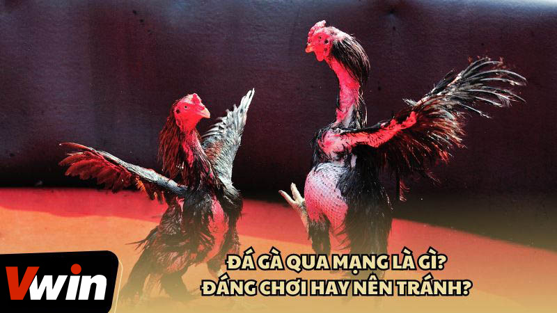
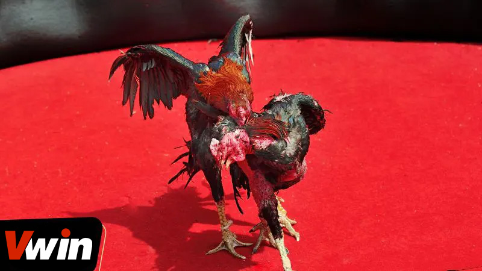
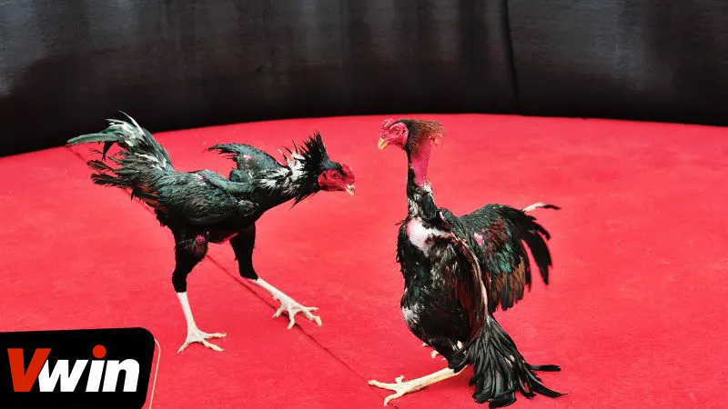

.png)
ĐÃ ĐĂNG TRÊN TRÊN THÁNG BA 7, 2024 BỞI Vwin
Đá gà qua mạng là gì? Đá gà, với bề dày lịch sử, từ lâu đã trở thành một phần không thể thiếu trong văn hóa dân gian của Việt Nam. Ngày nay, sự phát triển của công nghệ thông tin đã biến trò chơi này thành một hình thức cá cược trực tuyến, thu hút một lượng lớn người chơi từ khắp nơi.
Trò chơi đá gà trực tuyến không chỉ giữ lại nét đặc trưng của trò chơi truyền thống mà còn mở rộng cơ hội cho người chơi tham gia một cách dễ dàng hơn, mang đến một kênh giải trí mới mẻ và hấp dẫn, đồng thời cũng là cơ hội để kiếm lời từ việc cá cược.
Đá gà, một truyền thống giải trí có từ lâu đời, là phần của di sản văn hóa Việt Nam. Trong thời đại công nghệ thông tin, cá cược đá gà đã phát triển thành một lĩnh vực đa dạng, với nhiều loại cược dựa trên kết quả của các trận đấu.
Đá gà mạng, cụ thể hơn, là hình thức cá cược đá gà qua Internet. Điều này giúp mọi người có thể tham gia cá cược một cách dễ dàng, tận hưởng niềm vui và cơ hội kiếm tiền từ bất cứ đâu, chỉ cần kết nối mạng.
Cá cược đá gà trực tuyến ngày nay được tổ chức qua nhiều kênh khác nhau, tùy thuộc vào chính sách của từng nhà cái và quy định pháp luật tại địa phương. Phổ biến nhất là việc tham gia cá cược thông qua các trang web chuyên biệt. Những trang web này cung cấp cơ hội cho người chơi đặt cược vào các trận đá gà diễn ra ở nhiều địa điểm khác nhau, ngay từ sự thoải mái của ngôi nhà họ.
Người chơi có quyền lựa chọn phe mình muốn đặt cược và số tiền họ sẵn lòng mạo hiểm. Họ có thể thực hiện việc đặt cược này thông qua nhiều phương thức thanh toán điện tử như ví điện tử, chuyển khoản ngân hàng, hoặc sử dụng thẻ tín dụng, giúp quá trình tham gia được tiện lợi và nhanh chóng.
Khi trận đấu kết thúc, nếu lựa chọn của người chơi chiến thắng, họ sẽ nhận được khoản tiền thắng cược qua cùng phương thức thanh toán mà họ đã sử dụng để đặt cược. Điều này tạo nên một hình thức giải trí cá cược linh hoạt, thuận tiện, đồng thời mang lại cơ hội kiếm lợi nhuận cho người chơi từ mọi nơi trên thế giới.
Đá gà qua mạng là gì từ lâu đã trở thành một phần không thể thiếu trong văn hóa dân gian của Việt Nam
Sau khi đã tìm hiểu đá gà qua mạng là gì, chúng ta lại giải đáp tiếp tục một thắc mắc liệu có nên chơi đá gà qua mạng không? Mặc dù không được nhà nước khuyến khích do tiềm ẩn một số rủi ro, nhưng với sự cân nhắc và lựa chọn nhà cái uy tín, người chơi hoàn toàn có thể giảm thiểu những rủi ro này và tận hưởng trò chơi một cách an toàn. Dưới đây là một số lý do mà SV388 tin rằng bạn nên tham gia đá gà mạng:
Chơi đá gà mạng nổi bật với sự tiện lợi và dễ dàng so với các hình thức cá cược truyền thống như việc phải tới sòng bạc hay đặt cược tại nơi diễn ra sự kiện thể thao. Với chỉ một kết nối internet và tài khoản trên nền tảng cá cược, người chơi có thể tham gia vào các trận đá gà mạng mọi lúc, mọi nơi mà không cần phải di chuyển.
Điều này không chỉ tiết kiệm thời gian và công sức mà còn mở ra cơ hội tiếp cận với một loạt các trận đá gà từ khắp nơi trên quốc gia, cho phép người chơi lựa chọn và đặt cược theo sở thích cá nhân.
Sự đa dạng của các sự kiện đá gà mạng tổ chức hàng ngày mang đến cho người chơi nhiều lựa chọn, cho phép họ tìm kiếm trận đá phù hợp với sở thích và khả năng tài chính của mình. Không chỉ giới hạn ở việc chọn lựa sự kiện, người chơi còn được thưởng thức sự phong phú trong việc lựa chọn loại gà, tỷ lệ cược, và các phương thức đặt cược khác nhau.
Điều này không chỉ làm tăng sự thú vị và hấp dẫn cho trò chơi mà còn tạo điều kiện để người chơi tối ưu hóa cơ hội chiến thắng của mình bằng cách chọn lựa thông minh dựa trên kiến thức và kinh nghiệm cá nhân.
Sau khi đã tìm hiểu đá gà qua mạng là gì, chúng ta lại giải đáp tiếp tục một thắc mắc liệu có nên chơi đá gà qua mạng không?
Trong thế giới cá cược đá gà mạng, một điểm nổi bật là việc các trận đấu đều được phát sóng trực tiếp. Điều này không chỉ tạo ra một môi trường minh bạch và công bằng cho tất cả người chơi mà còn cho phép họ theo dõi sát sao diễn biến của trận đấu. Nhờ vào sự phát sóng trực tiếp, người chơi có thể quan sát mọi chi tiết và đưa ra quyết định đặt cược của mình vào những giây phút cuối cùng trước khi trận đấu kết thúc, giúp tăng cơ hội chiến thắng dựa trên nhận định và phân tích tình hình thực tế của trận đấu.
Đá gà mạng thu hút người chơi không chỉ bởi sự tiện lợi và trực quan mà còn vì tỷ lệ cược cao, làm tăng khả năng sinh lời. Đối với những ai có kinh nghiệm và kiến thức sâu rộng về gà đá, cơ hội để kiếm được lợi nhuận cao từ việc đặt cược là rất lớn. Sự hiểu biết về các yếu tố như đặc điểm của gà, lịch sử chiến đấu, và phong độ hiện tại có thể giúp người chơi đưa ra quyết định đặt cược thông minh, tối ưu hóa cơ hội chiến thắng của họ trong mỗi trận đấu.
Trong bối cảnh cuộc sống hiện đại đầy áp lực và bận rộn, đá gà mạng xuất hiện như một phương tiện giải trí đầy thú vị, mang lại cơ hội cao để xả stress cho nhiều người. Không chỉ dừng lại ở đó, hoạt động này còn mang giá trị giáo dục khi giúp người tham gia mở rộng kiến thức về thế giới động vật, cũng như hiểu biết sâu sắc hơn về các quy tắc, chiến thuật và luật lệ điều chỉnh một trận đấu.
Đá gà mạng, qua đó, không chỉ là một hình thức giải trí mà còn là một phương tiện học hỏi và phát triển bản thân, giúp người chơi có cái nhìn toàn diện hơn về truyền thống và văn hóa liên quan đến trò chơi này.
Trong thế giới cá cược đá gà mạng, một điểm nổi bật là việc các trận đấu đều được phát sóng trực tiếp
Đá gà mạng là gì, mặc dù không phải là một phát minh mới mẻ tại Việt Nam, nhưng đã thu hút sự quan tâm và tham gia của nhiều thế hệ người chơi. Mặc dù tồn tại một số rủi ro liên quan, nhưng nói chung, phương thức này được đánh giá là khá an toàn, từ góc độ pháp lý đến bảo vệ tài sản của người chơi. Hy vọng rằng những thông tin mà chúng tôi cung cấp sẽ hữu ích và góp phần vào trải nghiệm cá cược của bạn tại Đá Gà Vwin. Chân thành cảm ơn bạn đã dành thời gian để đọc bài viết này.
Vwin được công nhận là nhà cái cá cược hợp pháp - an toàn. Vwin còn có trụ sở chính và cá cược trực tiếp tại Phú Quốc.